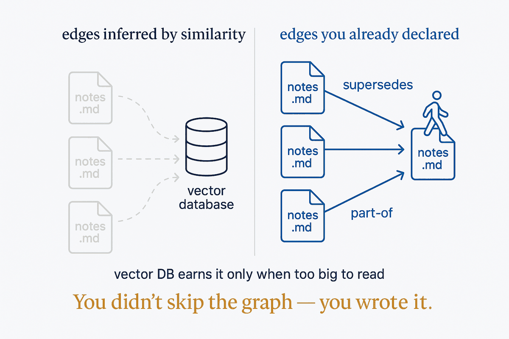

You keep being told to load your notes into a vector database or a graph database. If they're structured and linked, you already have the graph — the agent can walk the files.

The standard advice for making your notes useful to an AI is to move them somewhere else: chunk them, embed them, load them into a vector database, or stand up a graph database and import them. It sounds like the serious version of the work. Often it's the unnecessary version.
If your notes are structured — each file a unit, with frontmatter that types it and links that connect it — you already have a graph. Not a metaphor for one; the actual thing. A folder of linked markdown is nodes and edges, and an agent can walk it directly: open a file, follow its links, read the ones that matter, reason across the small set it gathered. The links you wrote by hand are the edges a vector database spends compute trying to reconstruct by similarity — except yours already declare what they mean. You didn't skip the graph. You wrote it in a format a human can also read.
The vector database earns its place under one condition, and it's worth stating plainly so this doesn't become dogma: when the collection is genuinely too large to read, similarity search is how you find the candidates worth looking at. That's a real job. But it's a narrower job than the pitch implies, and it arrives later than people think — usually well after the point where a walkable set of well-linked files would have answered the question faster and with fewer moving parts. Reach for the heavy infrastructure when reading breaks down, not before, and not because a diagram made it look like the grown-up choice.
The reason this matters beyond saving a database is that it changes what you're building on. Markdown you can open, read, edit and version yourself is structure you own; a proprietary index is structure you rent, and it locks your understanding inside a tool. Keep the graph in files and the same asset works for you today and survives the next tool you try — which is the whole point of putting the value in the structure rather than the machinery that reads it.
So before you embed anything: check whether you're solving a real too-big-to-read problem or performing rigor. Structure and link your files well, and the graph everyone tells you to go build is the one you've been writing all along.